01 · Databases (BD70)
SQL trainer that grades your queries
A progressive SQL path where every exercise runs on a fresh database inside the browser. The answer checker compares your result with the expected one, so any correct query passes, not only the one in the answer key.
- 11 levels, from
SELECTto joins, subqueries,CREATE TABLEand views - SQLite compiled to WebAssembly (sql.js) with a small MySQL compatibility layer
- Entity-relationship design method, normalisation and optimisation sheets, a free sandbox
- Hints, reference solution and a short explanation after each check
Source private · course material stays with the course
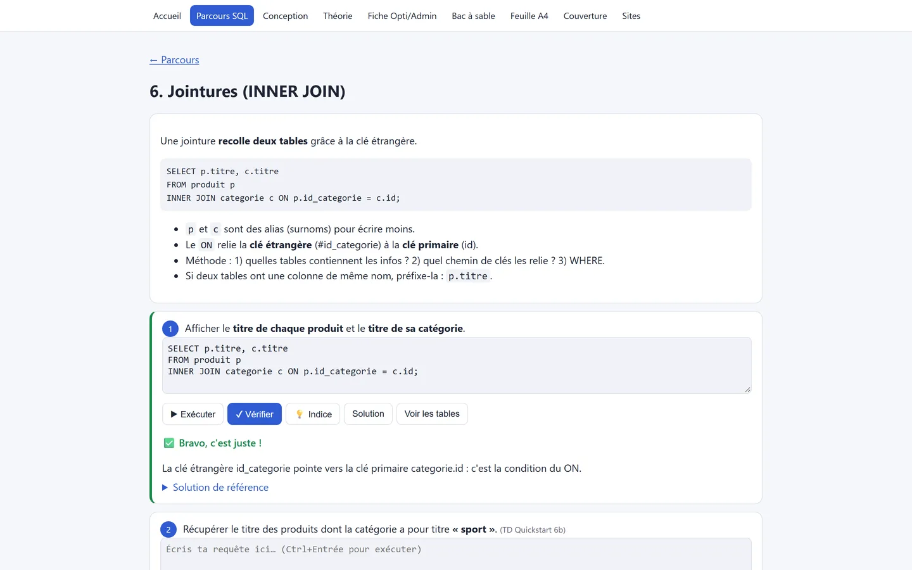
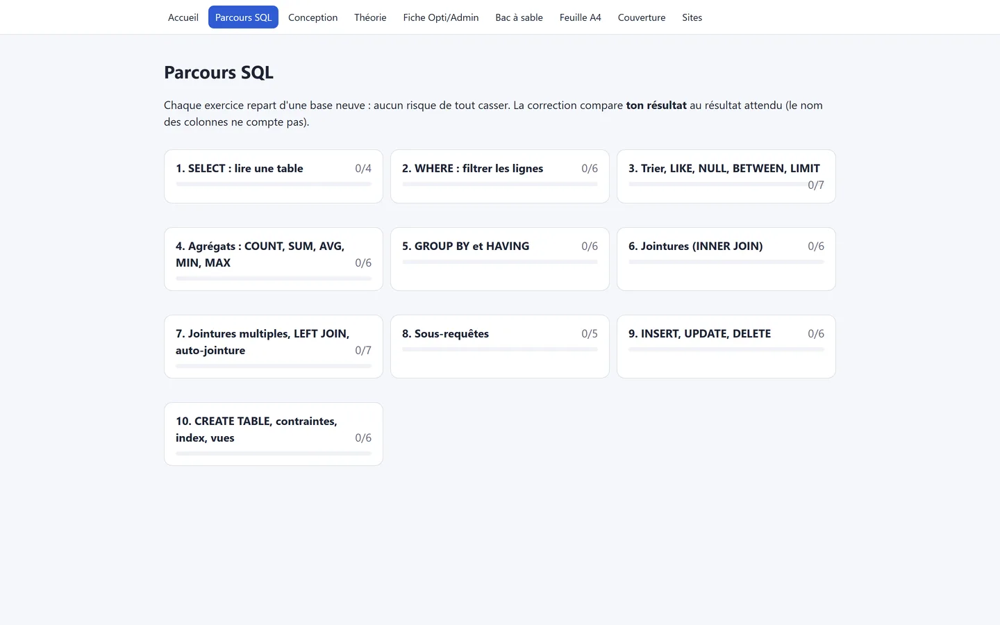
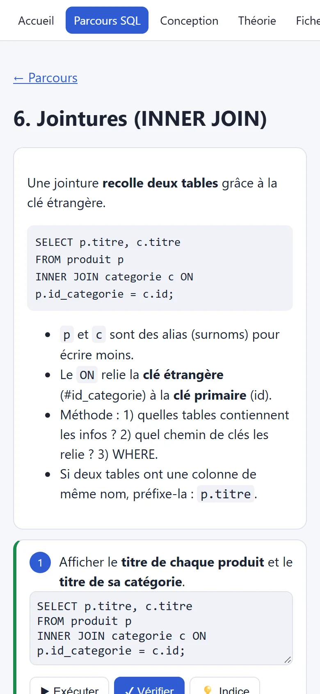
02 · Networking lab (SR71)
A Cisco IOS console in the browser
For a hands-on lab exam on real switches and routers, I wrote a teaching simulator of the Cisco command line, with missions that grade themselves as you type.
- IOS simulator: modes, abbreviations (
conf t,sh ip int br),?help, Tab completion, realistic errors - Cabling bench: wire the lab topology with straight, crossover or console cables, then check it
- Commands by machine, English instruction → command translator, timed randomised mock exams
Source private · demo on request
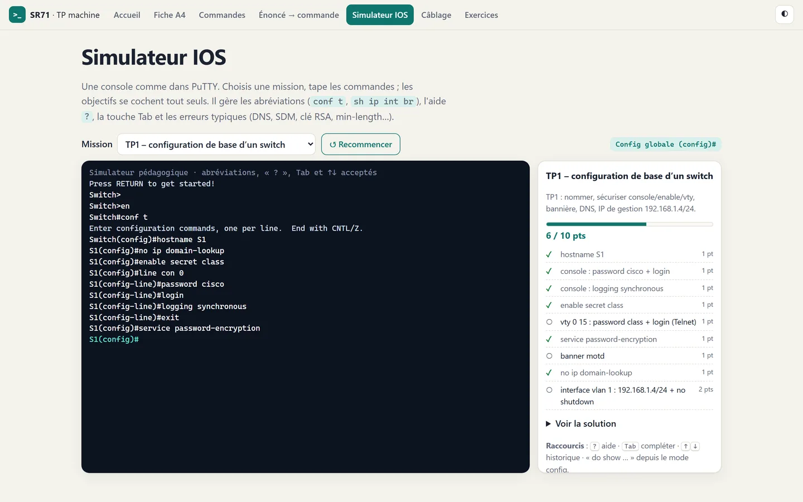
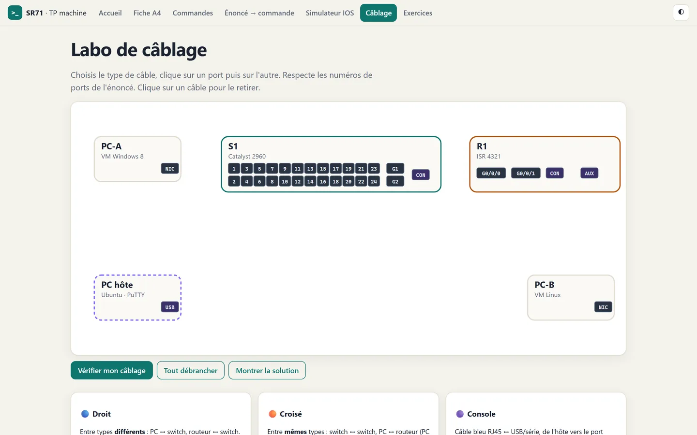
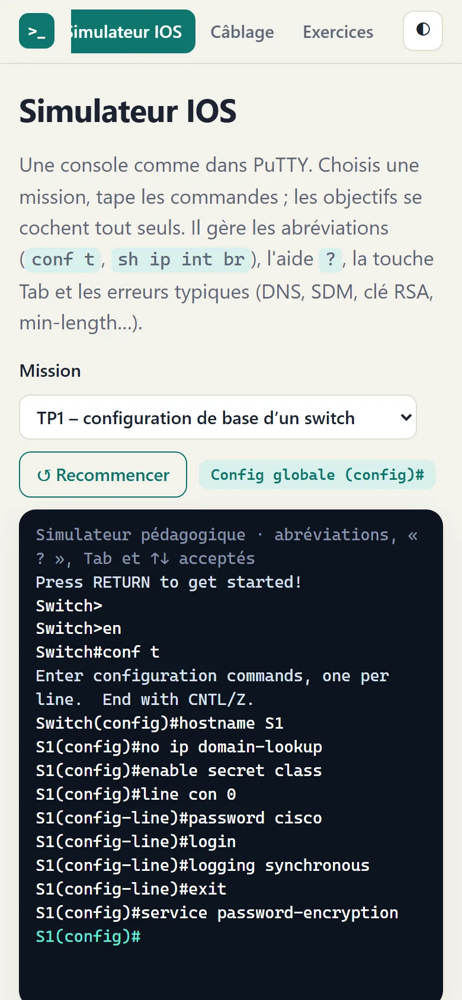
03 · Networking theory (SR71)
438 quiz cards, one at a time
A French quiz app for the CCNA 1 and 2 modules, with 153 original questions on the topics the question banks left out, each linked to the exact course slides.
- 41 “reflex” families: how to recognise a question type, the method, the trap, a mnemonic
- 10 express lessons and 69 open questions for the written part
- Filters by chapter, never seen, mistakes and favourites; JSON export/import of progress
Source private
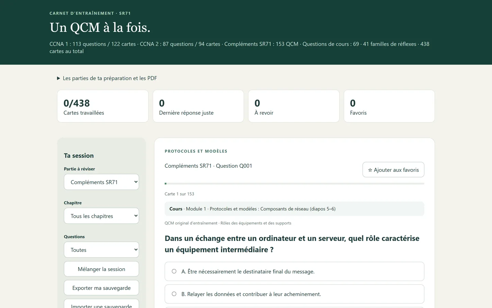
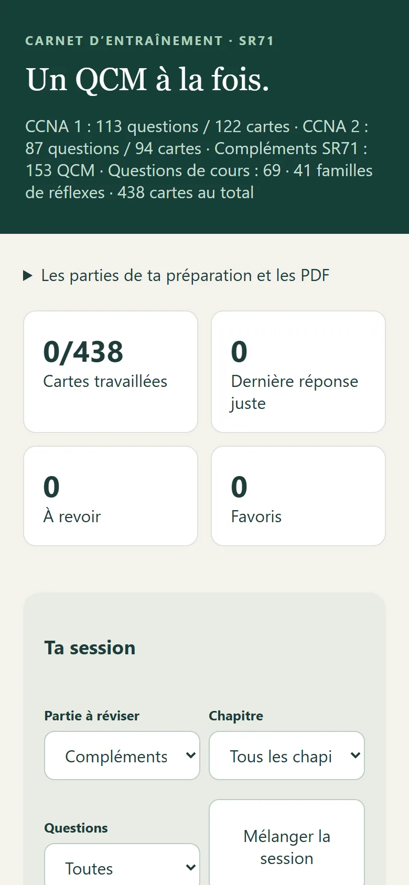
04 · Java (PR70)
Java lab trainer, every snippet compiled
The exam is on paper: read code, fill in the blanks. So the site trains exactly that, chapter by chapter in the order of the labs.
- 94 corrected exercises; the code of each one was compiled and run with Java 21
- Fill-in-the-blank, “what does it print?”, multiple choice, one cheat sheet per chapter
- Printable mock exam with answer key, an A4 cheat sheet and a lab coverage page
Source private
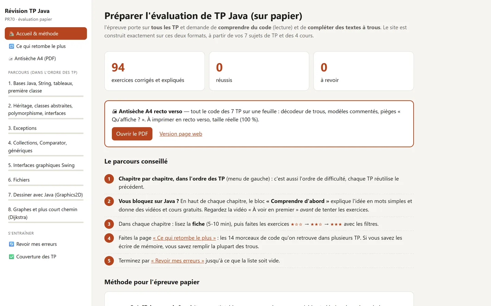
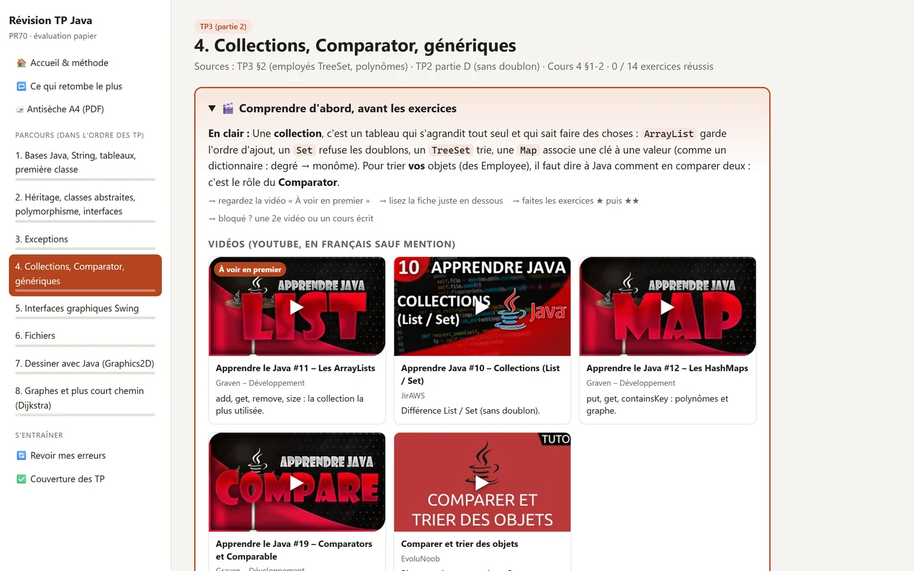
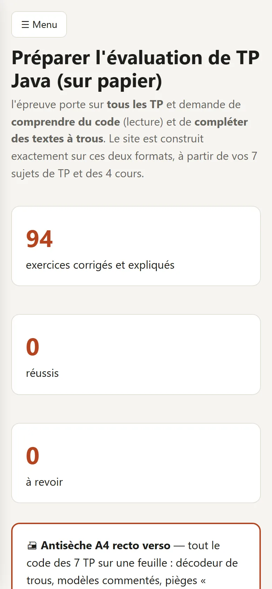
05 · English · live
TechTalk, an English revision workshop
Exercises with explained corrections for the first-semester written English exam, built on the course material.
Source private · course material stays with the course
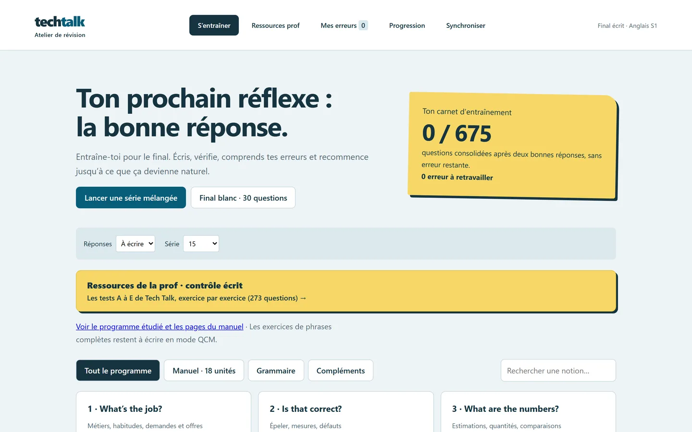
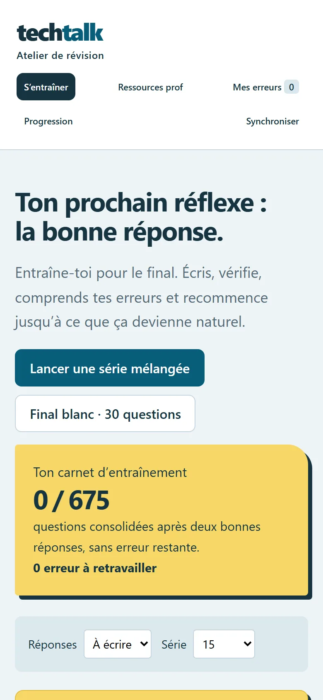
How I build them
Same recipe every time, and it holds up.
Start from the real course
Slides, labs and scanned handouts become structured content. A coverage page shows which part of the course each exercise trains, so gaps are visible instead of guessed.
Grade automatically, explain always
SQL runs on a real engine, IOS commands go through a parser, Java snippets are compiled. Every answer comes with a short explanation, not just right or wrong.
Local-first by default
Static files, no account, no server. Progress lives in the browser and can be exported. The same idea as my travel app Détours.
Why the sources are private: the tools are built on course material (labs, slides, handouts) that belongs to the teaching staff. The screenshots here only show my own exercises and interface. Happy to give a live demo.